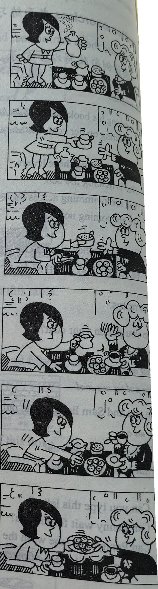
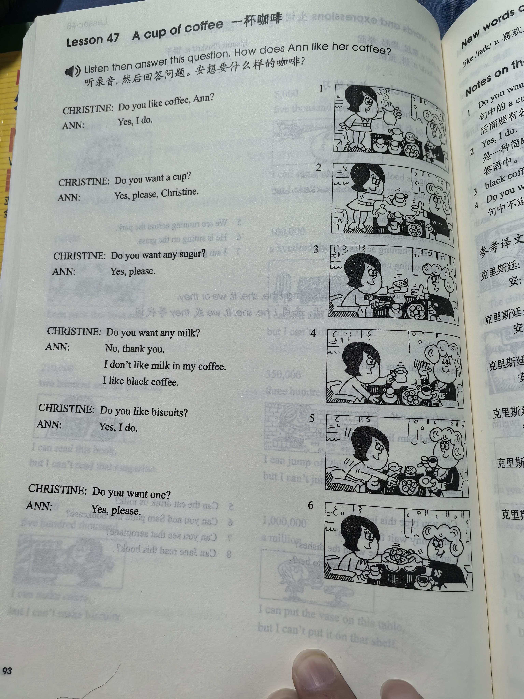
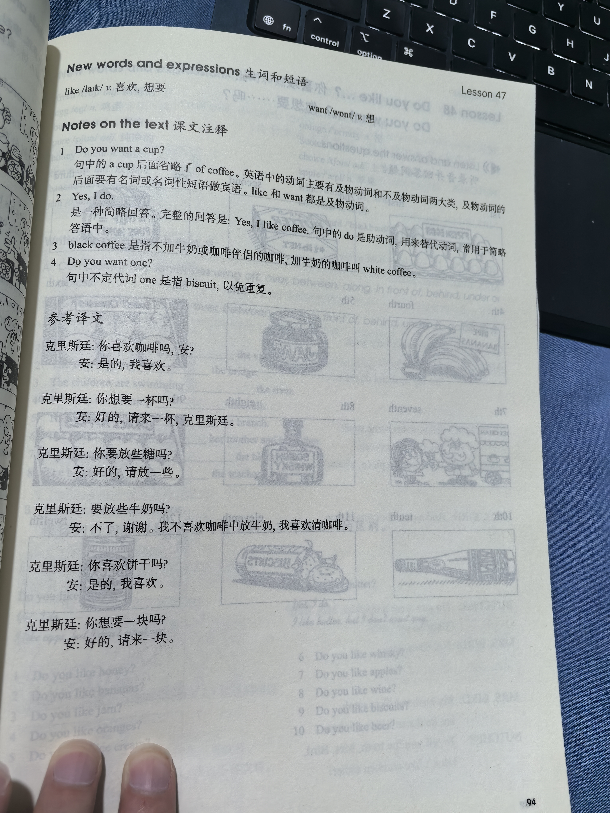

Lesson content · 课文
Lesson 47: A cup of coffee · 一杯咖啡
Listen then answer this question. 听录音，然后回答问题。
How does Ann like her coffee?
安想要什么样的咖啡？
CHRISTINE: Do you like coffee, Ann?
ANN: Yes, I do.
CHRISTINE: Do you want a cup?
ANN: Yes, please, Christine.
CHRISTINE: Do you want any sugar?
ANN: Yes, please.
CHRISTINE: Do you want any milk?
ANN: No, thank you. I don’t like milk in my coffee. I like black coffee.
CHRISTINE: Do you like biscuits?
ANN: Yes, I do.
CHRISTINE: Do you want one?
ANN: Yes, please.

New words and expressions · 生词和短语
| Word · 单词 | Pronunciation · 音标 | Meaning · 词义 |
|---|---|---|
| like | /laɪk/ | v. 喜欢，想要 |
| want | /wɒnt/ | v. 想要 |
Notes on the text · 课文注释
- Do you want a cup? 句中的 a cup 后面省略了 of coffee。英语中的动词主要有及物动词和不及物动词两大类，及物动词的后面要有名词或名词性短语作宾语。like 和 want 都是及物动词。
- Yes, I do. 是一种简略回答。完整的回答是：Yes, I like coffee. 句中的 do 是助动词，用来替代动词，常用于简略答语中。
- black coffee 是指不加牛奶或咖啡伴侣的咖啡，加牛奶的咖啡叫 white coffee。
- Do you want one? 句中不定代词 one 是指 biscuit，以免重复。
Chinese translation · 参考译文
克里斯廷：你喜欢咖啡吗，安？
安：是的，我喜欢。
克里斯廷：你想要一杯吗？
安：好的，请来一杯，克里斯廷。
克里斯廷：你要放些糖吗？
安：好的，请放一些。
克里斯廷：要放些牛奶吗？
安：不了，谢谢。我不喜欢咖啡中放牛奶，我喜欢清咖啡。
克里斯廷：你喜欢饼干吗？
安：是的，我喜欢。
克里斯廷：你想要一块吗？
安：好的，请来一块。
Practice · 课文练习
Understand the lesson · 课文理解
Comprehension · 理解题
Answer the question about the lesson text. 根据课文回答问题。
-
comprehension: Comprehension · 理解题 — How does Ann like her coffee?
Practice worksheet · 配套练习
A. Dialogue
Read this dialogue. Fill in the missing words. 填空。
-
worksheet: A. Dialogue — Christine: ____ you like coffee, Ann? ____ you want a cup?
Ann: Yes, ____.
Christine: ____ you want ____ sugar?
Ann: Yes, ____.
Christine: ____ you want ____ milk?
Ann: No, ____. I ____ like milk in coffee. I ____ black ____.
B. Vocabulary
We use these adjectives with food and drink. Choose the correct adjectives from this box. 选用方框中的形容词来修饰句子中的食品和饮料。
fresh · pure · black · ripe · sweet · hot · cold · Scotch
-
worksheet: B. Vocabulary — I want a glass of ____ beer.
-
worksheet: B. Vocabulary — Be careful. The tea’s very ____.
-
worksheet: B. Vocabulary — I want 12 ____ eggs, please.
-
worksheet: B. Vocabulary — This ____ honey is very good.
-
worksheet: B. Vocabulary — I’m not well. I want a cup of ____ coffee!
-
worksheet: B. Vocabulary — These bananas are ____. You can eat them now.
-
worksheet: B. Vocabulary — I want a bottle of ____ whisky, please.
-
worksheet: B. Vocabulary — These oranges are lovely. They’re very ____.
C. Numbers
Write these ordinal numbers in words. 用英语序数词表示以下数字。
-
worksheet: C. Numbers — 1st
-
worksheet: C. Numbers — 2nd
-
worksheet: C. Numbers — 3rd
-
worksheet: C. Numbers — 4th
-
worksheet: C. Numbers — 5th
-
worksheet: C. Numbers — 6th
-
worksheet: C. Numbers — 7th
-
worksheet: C. Numbers — 8th
-
worksheet: C. Numbers — 9th
-
worksheet: C. Numbers — 10th
-
worksheet: C. Numbers — 11th
-
worksheet: C. Numbers — 12th
Original images · 原图对照
Expand a page to compare it with the transcription. Open the original in a new tab to zoom in.
展开原图核对文字，也可以在新标签页打开原图放大查看。
Lesson text and oral practice · 课文与口头练习
Open original · 打开原图 ↗ Download original · 下载原图


Vocabulary, notes and written exercises · 生词、注释与书面练习
Open original · 打开原图 ↗ Download original · 下载原图



Grammar practice · 语法练习
I. Answer the questions according to the examples
1.
- a. Do you want any apples? (a pound)
Yes, I do. Give me a pound of apples, please.
- b. Do you want any pencils? (three)
- c. Do you want any eggs? (twelve)
- d. Do you want any glasses? (one)
- e. Do you want any boxes? (two)
- f. Do you want any chocolate? (a large bar)
- g. Do you want any ice creams? (one)
2.
- a. Do you want any coffee?
No, I don't. I don't like coffee.
- b. Do you want any whisky?
- c. Do you want any cheese?
- d. Do you want any bread?
- e. Do you want any milk?
- f. Do you want any honey?
- g. Do you want any beer?
II. Answer the questions according to the examples
- 1. Do you want a banana? (yes)
Yes, please. I like bananas.
- 2. Do you want any butter? (no/cheese)
No, thank you, but I want some cheese.
- 3. Do you want a cup of tea? (yes)
- 4. Do you want any wine? (no/beer)
- 5. Do you want any biscuits? (yes)
- 6. Do you want a cup of black coffee? (yes)
- 7. Do you want any sugar? (no/honey)
- 8. Do you want any water? (no/coffee)
- 9. Do you want any fruit? (no/jam)
- 10. Do you want a glass of wine? (yes)
III. Answer the questions according to the example
- 1. Do you like cheese on your bread? (butter)
No, I don't. But I like butter on my bread.
- 2. Do you like cream in your coffee? (milk)
- 3. Do you like ice in your whisky? (in beer)
- 4. Do you like egg on your bread? (jam)
- 5. Do you like honey in your milk? (sugar)
- 6. Do you like pure milk in an ice cream? (chocolate)
- 7. Do you like sugar in your tea? (lemon)
- 8. Do you like jam on your bread? (cheese)
- 9. Do you like chocolate in a cake? (fruit)
- 10. Do you like sugar in your soup? (salt)
Your notes and answers
Use this space for longer responses or exercises that do not have an individual answer box.